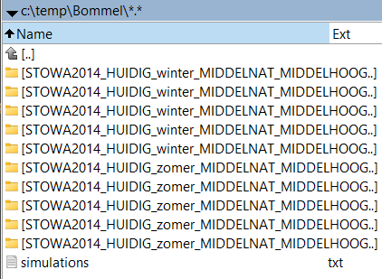

Werking
In dit hoofdstuk bespreken we hoe De Nieuwe Stochastentool werkt.
grondgedachte
De grondgedachte is dat er een bepaalde modelschematisatie is (of meerdere in sequentie) waarmee een stochastenanalyse moet worden uitgevoerd.
De modelschematisatie moet worden doorgerekend met een groot aantal combinaties van randvoorwaarden en systeemtoestanden, bijvoorbeeld:
- Neerslagvolume
- Neerslagpatroon
- Initiële bodemvochttoestand
- Buitenwaterstand
- Wind
- Onderhoudstoestand van de watergangen
- Kans op kunstwerkfalen
Als de kans van vóórkomen op elk van die combinaties op voorhand bekend is, kunnen we uit de rekenresultaten overschrijdingsgrafieken opstellen.
voorbereiding
De gebruiker configureert De Nieuwe Stochastentool door een database in te stellen, aan te geven met welke neerslagduur moet worden gerekend, welk klimaatscenario moet worden toegepast en door de modelschematisatie aan te wijzen. Deze hele configuratie wordt vastgelegd in een .xml-bestand.
stochasten definieren
De gebruiker definieert stochasten en classificeert die. Iedere klasse van een stochast krijgt een representatieve waarde waarmee het model kan rekenen én een bijbehorende kans toegewezen. Al deze informatie komt in de database te staan.
uitvoerlocaties definieren
De gebruiker geeft op voor welke resultaatlocaties hij of zij overschrijdingsgrafieken wil opstellen. In het geval van een 1D-model kunnen dit bijvoorbeeld observation points zijn en in het geval van een 2D-model kunnen dit alle 2D-cellen zijn.
simulaties klaarzetten
De gebruiker stelt op het tabblad ‘Simulaties’ alle combinaties samen van stochastenklassen.
Stel dat er 10 klassen neerslagvolume zijn, 7 neerslagpatronen en 4 klassen initieel grondwatervolume, dan resulteert dit in 10 x 7 x 4 = 280 unieke simulaties. Voor iedere simulatie die wordt een kopie van de oorspronkelijke modelschematisatie geplaatst in een tijdelijke werkmap. Vervolgens injecteert De Nieuwe Stochastentool de modelbestanden die specifiek zijn voor die ene simulatie.
Bijvoorbeeld: een specifieke combinatie moet worden doorgerekend met 100 mm neerslag en onderhoudstoestand ‘ruw’. In dat geval zullen het betreffende neerslagbestand en ruwheidsbestand in het (gekopieerde) model worden geïnjecteerd, waarna het kan worden doorgerekend.
Iedere simulatie heeft zijn eigen submap in de tijdelijke werkmap. In de tijdelijke werkmap wordt een bestandje genaamd ‘Simulations.txt’ geplaatst, wat een overzicht geeft van alle simulaties. Dit bestandje gaan we later voeden aan het losse programma BAT_RUNR.EXE om de modellen daadwerkelijk door te rekenen.

simulaties doorrekenen
Tot voor kort konden alle simulaties ook vanuit De Nieuwe Stochastentool zelf worden aangestuurd en gestart. Hier zijn we vanaf gestapt om verschillende redenen.
Sinds kort worden de simulaties gestart met het programma BAT_RUNR.EXE. Als argument geven we het pad naar het bestand simulations.txt mee. Dit bestand geeft een lijst van alle simulaties die moeten worden uitgevoerd. Voor BAT_RUNR leveren we in de release een apart installatiebestand mee. We merken op dat, om BAT_RUNR te kunnen draaien het .NET framework 7.0 op de computer moet zijn geïnstalleerd.
resultaten kopiëren
Als de simulaties gereed zijn, kan De Nieuwe Stochastentool de resultaatbestanden uit de tijdelijke werkmap ophalen en in de eigen resultatenmap plaatsen.
resultaten uitlezen
Met de resultaatbestanden in de eigen resultatenmap is het mogelijk om ze uit te lezen. Voor iedere opgegeven resultaatlocatie leest het programma het gesimuleerde maximum uit iedere run en schrijft dit naar de database (tabel: RESULTATEN en RESULTATEN2D).
resultaten nabewerken
Als waarde + kans bekend zijn voor iedere simulatie, kan De Nieuwe Stochastentool een overschrijdingsgrafiek opstellen voor iedere locatie. Het resultaat komt te staan in de database in de tabellen HERHALINGSTIJDEN en HERHALINGSTIJDEN2D.
exporteren en publiceren
De Nieuwe Stochastentool heeft mooie tools om de uitkomsten van de stochastenanalyse te publiceren in een webviewer en/of in Excel-formaat.